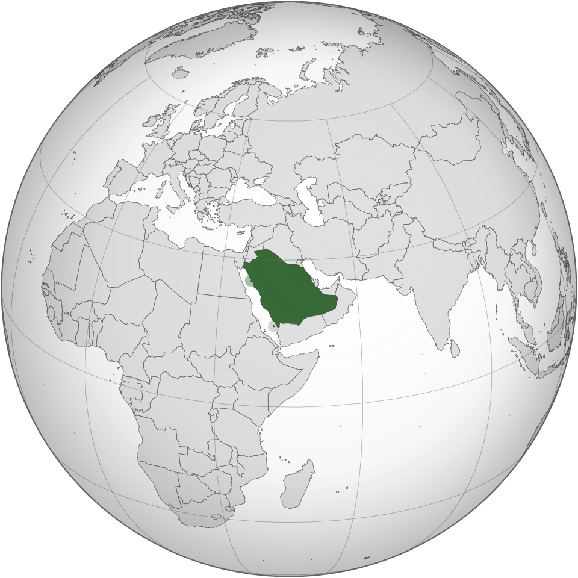

🕌 Cultura
A cultura saudita possui fortes influências da tradição árabe e islâmica. A religião, a arquitetura, a música, a poesia e os costumes tradicionais têm grande importância na identidade do país.

A Arábia Saudita é um país localizado na Península Arábica, no Oriente Médio. Conhecida por seus grandes desertos, cidades históricas e pela importância cultural e religiosa de seus territórios.
A cultura saudita possui fortes influências da tradição árabe e islâmica. A religião, a arquitetura, a música, a poesia e os costumes tradicionais têm grande importância na identidade do país.
A culinária da Arábia Saudita é marcada por arroz, carnes, especiarias, tâmaras e pães tradicionais. Entre os pratos conhecidos estão:
A Arábia Saudita abriga Meca e Medina, duas das cidades mais importantes do Islã. Milhões de muçulmanos de diferentes partes do mundo visitam a região durante a peregrinação religiosa.